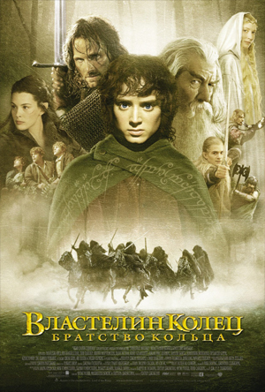
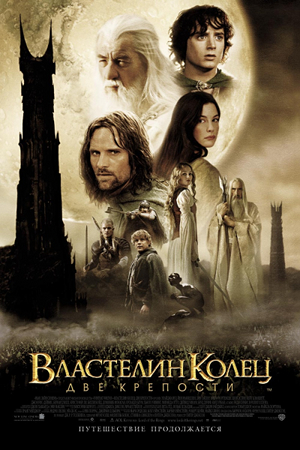
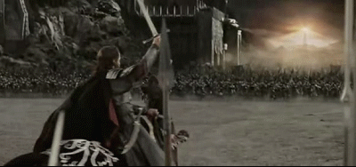

Кратко о каждом фильме
Властелин колец: Братство Кольца
«Властели́н коле́ц: Бра́тство Кольца́» (англ. The Lord of the Rings: The Fellowship of the Ring) — кинофильм 2001 года, первая часть кинотрилогии, снятой Питером Джексоном по роману Дж. Р. Р. Толкина «Властелин колец»[2]. Картина получила 4 премии «Оскар»[3] и ещё 68 различных наград и 81 номинацию. Съёмки трилогии «Властелин колец» заняли около 15 месяцев, и около года ушло на послесъёмочную подготовку фильма. Премьера состоялась 19 декабря 2001 года.
Властелин колец: Две крепости
«Властели́н коле́ц: Две кре́пости» (англ. The Lord of the Rings: The Two Towers) — кинофильм, вторая часть трилогии, снятой Питером Джексоном по роману Дж. Р. Р. Толкина «Властелин колец»[2]. Премьера состоялась 18 декабря 2002 года в США и 23 января 2003 года в России. В мировом прокате фильм собрал 926 млн. долларов[1]. Этот фильм по состоянию на 1 января 2020 года занимает 59 место среди самых кассовых фильмов мира.
Властелин колец: Возвращение короля
«Властели́н коле́ц: Возвраще́ние короля́» (англ. The Lord of the Rings: The Return of the King) — кинокартина 2003 года, третья и заключительная часть кинотрилогии, снятой Питером Джексоном по роману Дж. Р. Р. Толкина «Властелин колец». Мировая премьера состоялась 1 декабря 2003 года в Новой Зеландии.